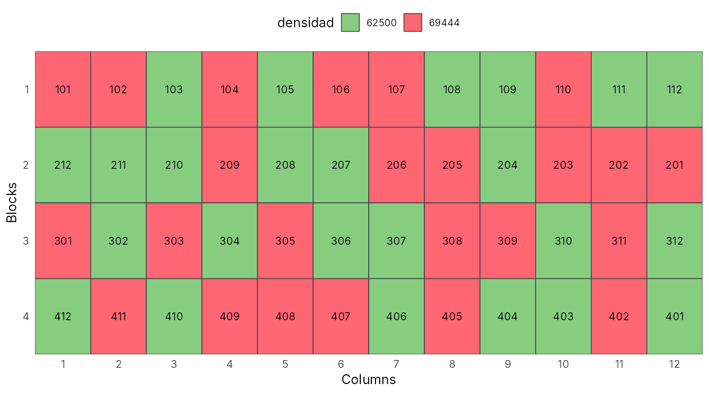

library(inti)
factores <- list(
densidad = c("62500", "69444"),
nitrogeno = c("180", "200", "220"),
fraccionamiento = c("2ap", "3ap")
)
fb <- design_repblock(nfactors = 3, factors = factores, type = "rcbd",
rep = 4, zigzag = TRUE, seed = 2019)
tarpuy_plotdesign(fb)Errores encontrados y propuesta
Errores e inconsistencias del artículo
| Dónde | Problema | Consecuencia |
|---|---|---|
| Tabla 1 | Los valores F de hileras por mazorca no corresponden a las medias de la Tabla 2 | La interacción N × F sería significativa (p = 0,039) y se reporta como no significativa |
| Tabla 2 | Letras de Tukey: 220 kg N/ha lleva “A” cuando no difiere de 180 kg N/ha | Se exagera la ventaja de las dosis altas |
| Análisis | El nitrógeno, un factor cuantitativo, se compara con Tukey | No se estima la forma de la respuesta ni una dosis óptima |
| Resultados | Se destaca una “mejor combinación” sin interacción significativa | Recomendación sin respaldo estadístico |
| Análisis | 84 pruebas F sin corrección por comparaciones múltiples | Los dos efectos significativos son compatibles con el azar |
| Tabla 2 | La densidad D1 figura como 65 200 plantas/ha; en la metodología es 62 500 | Con 0,80 m × 0,40 m y dos plantas por golpe salen 62 500; 65 200 es un error de digitación |
| Tabla 2 y conclusiones | La segunda aplicación figura como V7 (metodología), V6 (Tabla 2) y V2 (conclusiones) | No se sabe con certeza cuándo se aplicó el nitrógeno |
| Datos | No se publican los datos por parcela | No se pueden revisar supuestos (normalidad, homogeneidad) ni repetir el análisis completo |
Qué cambia en las conclusiones
- La conclusión de que más nitrógeno que 180 kg N/ha mejora el rendimiento se sostiene solo como tendencia lineal débil (p = 0,037), y no sobrevive a la corrección por pruebas múltiples.
- No se puede afirmar que 200 kg N/ha sea la dosis óptima: 200 y 220 no difieren, y la curvatura no es significativa.
- La ausencia de efecto de la densidad y del fraccionamiento es, en realidad, falta de potencia: el ensayo no detecta diferencias de rendimiento menores al 9 %.
Propuesta: repetir el experimento con un libro de campo reproducible
Diseñamos la réplica del experimento con Tarpuy (paquete inti de R), con los mismos factores y bloques que el artículo, para registrar esta vez los datos de cada parcela.

Ver código R
libro <- read.csv("data/libro_campo_maiz.csv")
knitr::kable(head(libro[, c("plots", "block", "densidad", "nitrogeno", "fraccionamiento")], 12),
caption = "Primer bloque del libro de campo (48 parcelas en total).")| plots | block | densidad | nitrogeno | fraccionamiento |
|---|---|---|---|---|
| 101 | 1 | 69444 | 200 | 2ap |
| 102 | 1 | 69444 | 200 | 3ap |
| 103 | 1 | 62500 | 200 | 3ap |
| 104 | 1 | 69444 | 180 | 3ap |
| 105 | 1 | 62500 | 200 | 2ap |
| 106 | 1 | 69444 | 220 | 3ap |
| 107 | 1 | 69444 | 220 | 2ap |
| 108 | 1 | 62500 | 220 | 2ap |
| 109 | 1 | 62500 | 180 | 2ap |
| 110 | 1 | 69444 | 180 | 2ap |
| 111 | 1 | 62500 | 180 | 3ap |
| 112 | 1 | 62500 | 220 | 3ap |
Mejoras que proponemos para la réplica:
- Publicar los datos por parcela junto al artículo (CSV en un repositorio).
- Agregar un testigo sin nitrógeno y ampliar el rango de dosis (por ejemplo 0, 100, 200 y 300 kg N/ha) para poder ajustar una curva de respuesta y estimar la dosis óptima económica.
- Analizar el nitrógeno con regresión o contrastes polinomiales, no con Tukey.
- Medir el nitrógeno del suelo antes de la siembra, ya que los autores atribuyen la falta de respuesta al N residual.
Referencias
Chura, J., Mendoza-Cortez, J. W., & de la Cruz, J. C. (2019). Dosis y fraccionamiento de nitrógeno en dos densidades de siembra del maíz amarillo duro. Scientia Agropecuaria, 10(2), 241–248. https://doi.org/10.17268/sci.agropecu.2019.02.09
Lozano-Isla, F. (2024). inti: Tools and Statistical Procedures in Plant Science [Paquete de R]. https://CRAN.R-project.org/package=inti